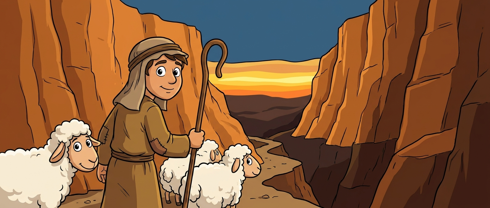
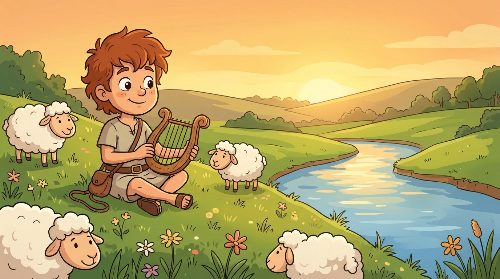
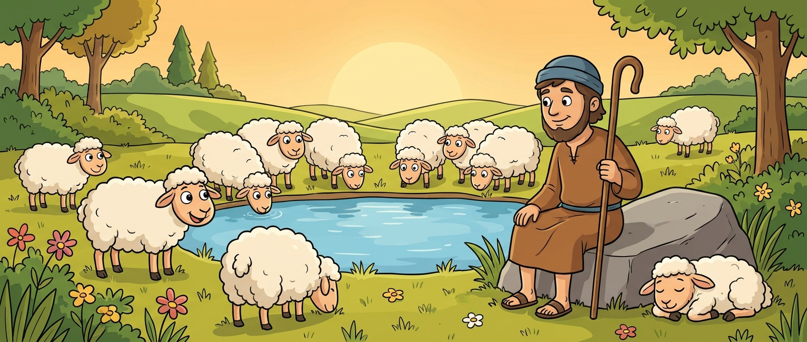
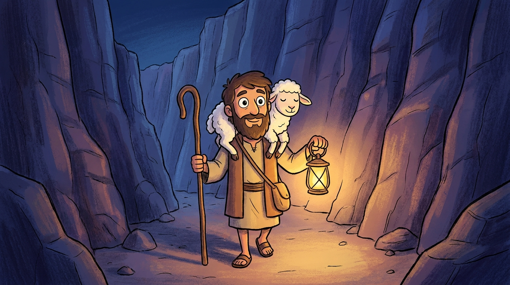
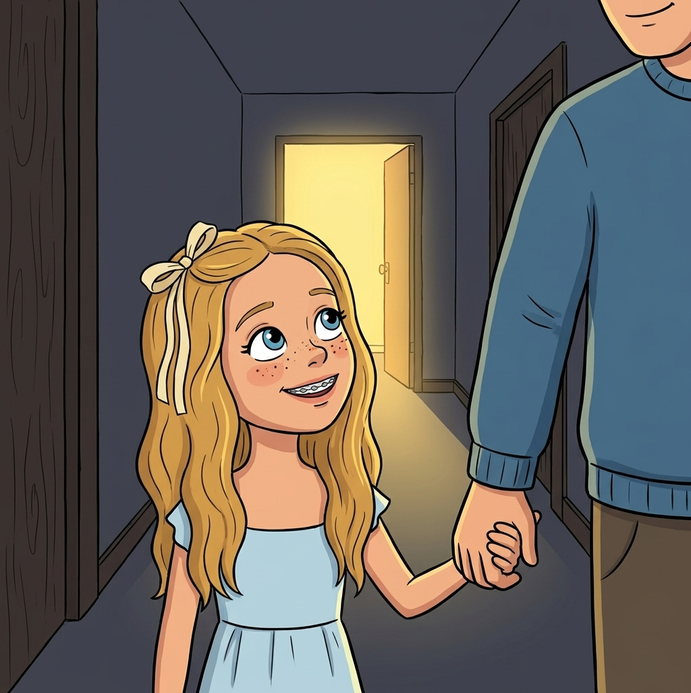
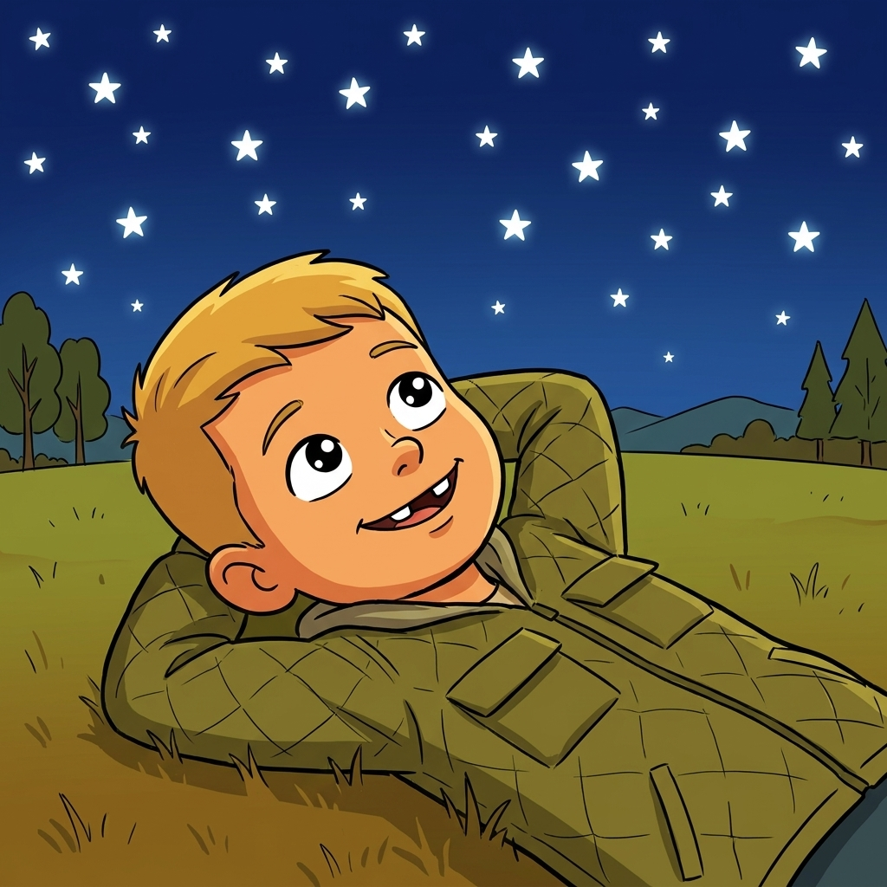
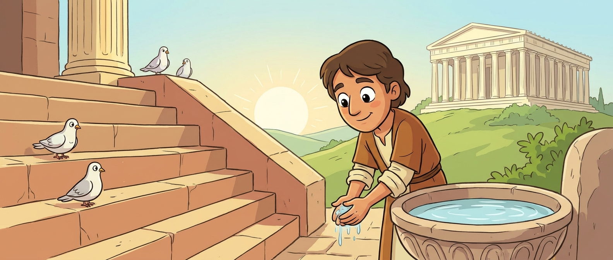
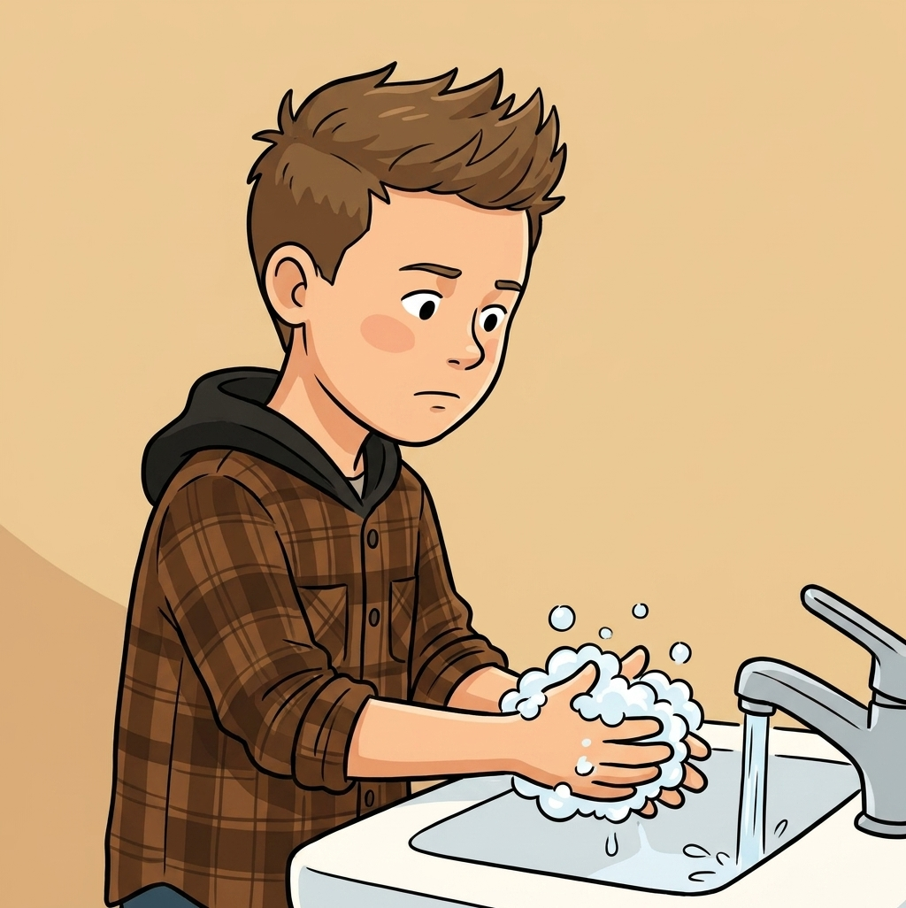
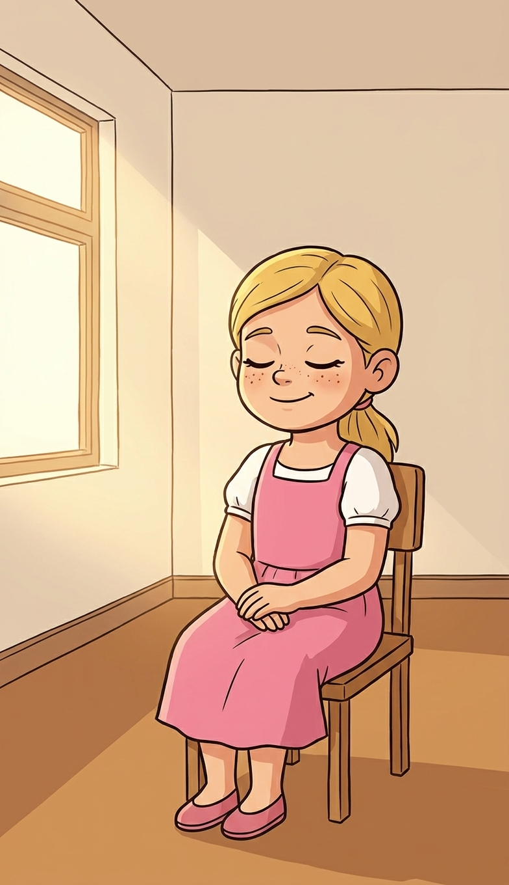
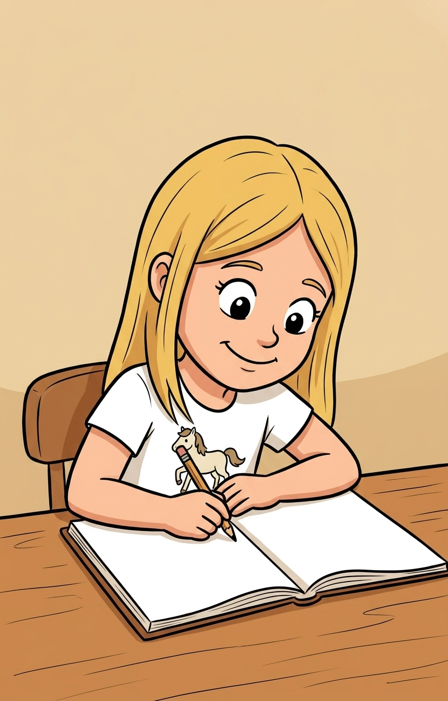

Psalms 1–2; 8; 19–33; 40; 46 / taught Sunday, August 23, 2026 / about 37 minutes
Every week this year we have read a story. There is no story this week. This week is the songbook, and the most famous song in it was written by a boy who used to smell like sheep.

A king could have written about thrones or armies. He wrote about sheep.
About 2 minutes
Two questions about Job. Let them tap the one they think is right.
So Job trusted God without an explanation. Fine. But what do you actually say to God on a day like that? That is what this whole book is for. Psalms is 150 sets of words for people who need some.
About 4 minutes
Psalms is the Bible's songbook. One hundred fifty songs, collected over hundreds of years, written to be sung out loud with instruments. The tunes are all lost. We only have the words.
Ask them what song they know by heart. Then ask why people sing when they are happy and also sing when they are sad.
About 5 minutes
You already know this kid. We met him in June: youngest of eight brothers, out with the sheep while everybody else got looked at, picked because the Lord looketh on the heart. Then the sling. Then the giant.
Before any of that, his job was keeping sheep alive. Find water. Find grass. Chase off a lion. Carry the ones that got hurt. Count them every night before dark.

Then he became king of the whole nation. And when King David sat down to write about God, out of every picture available to him, he reached for the one job he already knew.
If David is the shepherd, and God is David's shepherd, what does that make David? A sheep. He is completely fine with that. He wrote it down and let people sing it for three thousand years.
Not "a shepherd." My shepherd. A shepherd with a whole flock still knows which one is yours.
About 9 minutes
Six verses, eight lines. Tap each one and walk the psalm from the field to the house of the Lord. Slow down on verse four.
"The Lord is my shepherd; I shall not want."
Psalm 23:1
"I shall not want" is not a promise that you get everything you ask for. It means there is nothing you are missing.
"He maketh me to lie down in green pastures."
Psalm 23:2
A scared sheep will not lie down. It stands there watching. So a sheep lying down in the grass is a sheep that feels safe.
"He leadeth me beside the still waters."
Psalm 23:2
Sheep will not drink from fast water. It scares them. Somebody has to go find the calm spot first.
"He restoreth my soul."
Psalm 23:3
Ask them what you do with a sheep that is worn out. You do not yell at it and you do not make it walk faster. You let it rest.
"Yea, though I walk through the valley of the shadow of death, I will fear no evil: for thou art with me."
Psalm 23:4 · stop here
Read it again, slower. The shepherd does not steer him around the valley. He goes through. Nobody in this room is promised a life with no dark valley in it. What they are promised is who walks in it with them.
"Thy rod and thy staff they comfort me."
Psalm 23:4
Two different tools. The rod is a club, for whatever is out there hunting the sheep. The staff is the long one with the hook, for pulling a stuck sheep out of a hole. Ask which one they have needed lately.
"Thou anointest my head with oil; my cup runneth over."
Psalm 23:5
He could have said his cup was full. Full is enough. Running over is spilling down the sides and onto the table.
"And I will dwell in the house of the Lord for ever."
Psalm 23:6
The psalm opens in a field and closes in the house of the Lord. The last word of the whole thing is forever.
Eight lines. Start at the top.
Four of the eight lines are about being taken care of by somebody who knows the job. One is about a dark valley. The last word is forever.
David wrote this after he had been hunted, betrayed by his own son, and had wrecked things badly himself. He is not telling anybody that life is gentle. He is saying he knows who is walking next to him.



About 5 minutes
Sheep are not smart. They are very good at exactly one thing: they know their own shepherd's voice. A stranger can stand in the same field and call them and they will not move.
Works with an empty classroom and six kids.
Then ask how they knew which voice to follow. It was not the loudest one. They already knew it. That is why we practice hearing the Spirit on ordinary days, so it is familiar on the loud ones.
About 4 minutes
David spent a lot of nights outside with nothing to look at but the sky. Two of his psalms come straight out of that.
"The heavens declare the glory of God; and the firmament sheweth his handywork."
"When I consider thy heavens, the work of thy fingers, the moon and the stars... what is man, that thou art mindful of him?"
One thing each. What did God make that makes you think he is really there? Take every answer, including the funny ones.
Then make the turn, because David makes it. He looks at all of that and asks the honest question: if you built that, why would you bother remembering me? Psalm 8 never answers it. Psalm 23 does. The shepherd counts every sheep, every night, and notices which one is missing.

About 3 minutes
Psalm 24 asks a question you would ask standing outside a temple, which is probably where people sang it.
"Who shall ascend into the hill of the Lord? or who shall stand in his holy place? He that hath clean hands, and a pure heart."

Have everybody hold up their hands and look at them. Then say the important part out loud, because 9-year-olds get this one wrong in a way that can follow them for years. A pure heart does not mean never messing up. Nobody in the room qualifies on those terms and nobody ever has.
The proof is in the same songbook, by the same guy. David wrote Psalm 32 after he did something genuinely terrible.
"I acknowledged my sin unto thee... and thou forgavest the iniquity of my sin."
The shepherd does not write off the sheep that wandered. He goes and gets it, every time.

About 3 minutes
One more line. Six words, and it is an instruction rather than a description.

About 2 minutes
Nobody wrote these as an assignment. Somebody was scared, or sorry, or so relieved they could not sit down, and they reached for words. Other people kept the words because they needed them too.
Write your own psalm. One line to God about something real. It does not have to rhyme and nobody else has to read it, and you are allowed to complain in it. David did, constantly.

The Lord is a shepherd who knows which sheep is yours, walks with you through the dark part instead of steering around it, and goes back for the one that wandered off.
All eight lines of Psalm 23, shuffled. Tap them in order, starting at the beginning. A wrong one shakes at you and you try again.